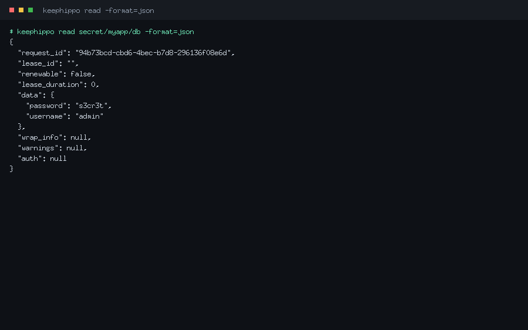
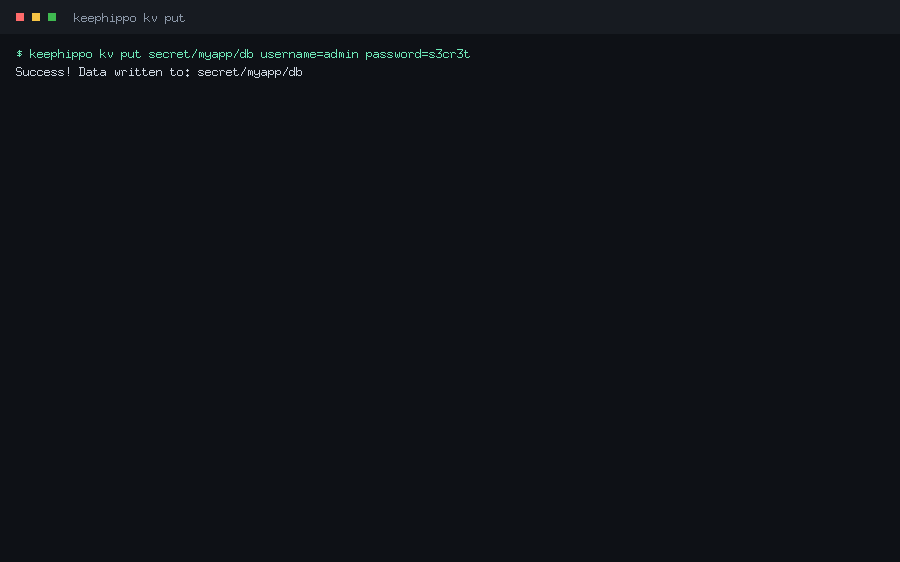
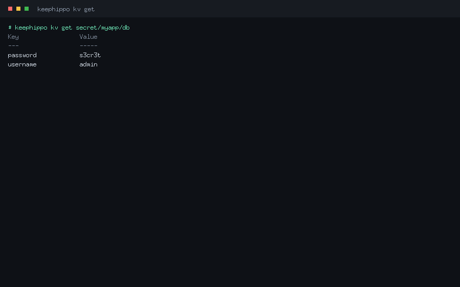
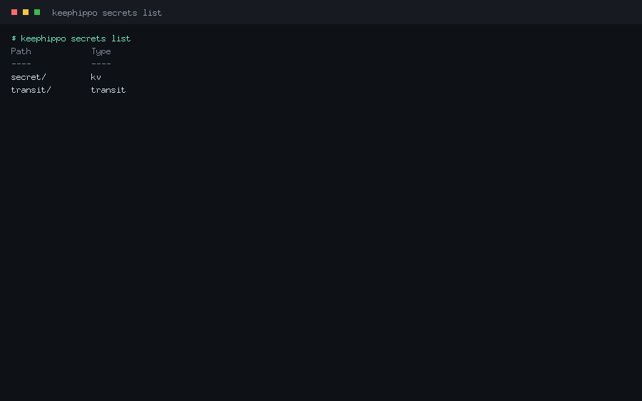
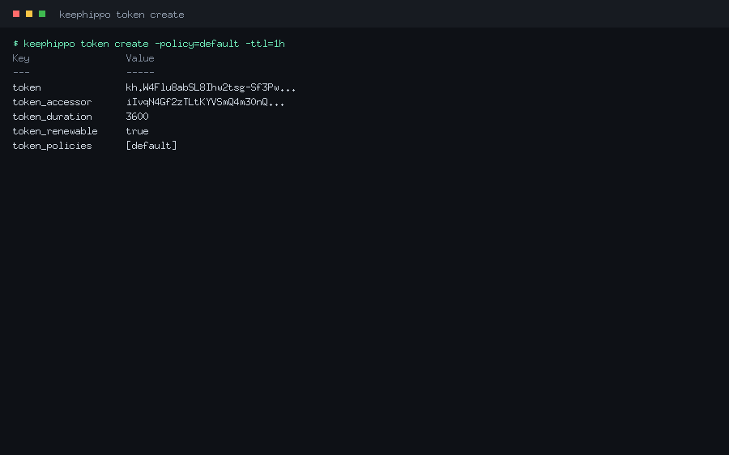
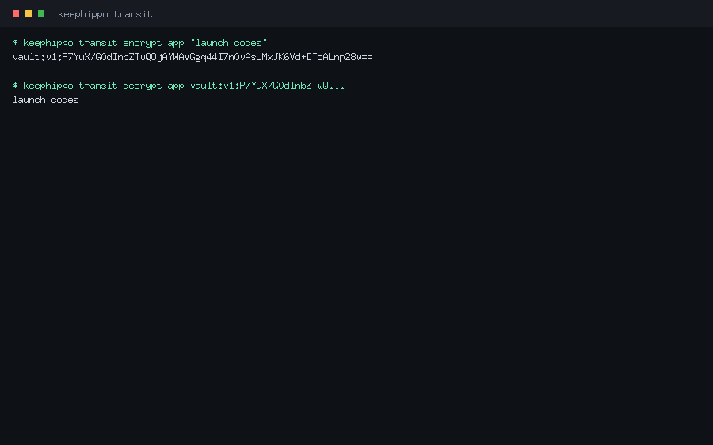
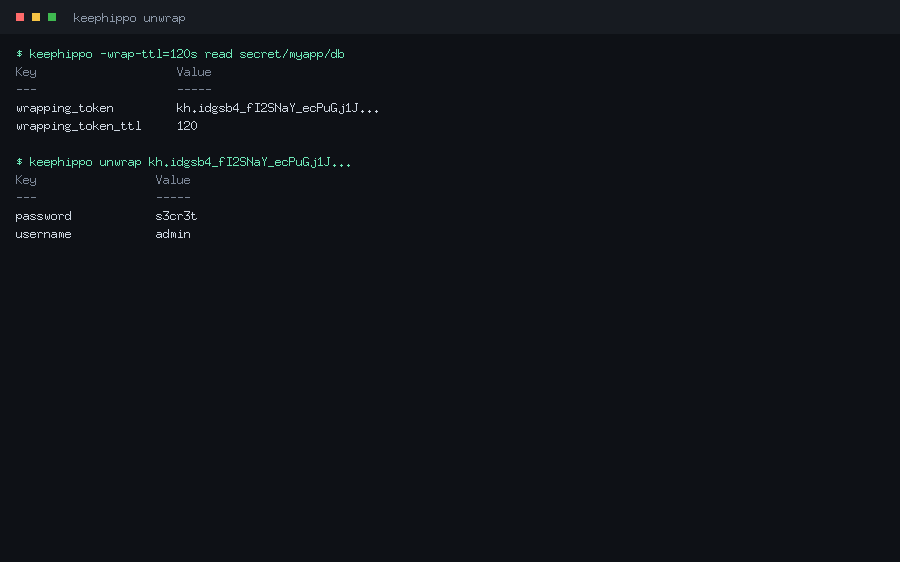

Command reference
Commands are grouped to mirror the CLI itself. Group commands (like kv or
auth) are containers for the subcommands beneath them.
Server & operator
keephippo server
Runs the keephippo server: the long-lived process that stores your secrets. Use
--dev for a throwaway in-memory server, or --config to point at an HCL/JSON
config file for a real, file-backed, operator-unsealed server.
Command options
| Flag | Type | Default | Description |
|---|---|---|---|
--dev |
bool | false |
In-memory, auto-unsealed dev server (prints the root token; not for production). |
--config |
string | — | Path to an HCL/JSON config file (required unless --dev). |
The config file declares a storage stanza (file/inmem), a listener, an
optional ui = true, and an optional seal "transit" { … } auto-unseal stanza.
Typical use
$ keephippo server --config /etc/keephippo/config.hcl
==> keephippo server started (storage: file, listener: 127.0.0.1:8200)
The server is sealed. Run 'keephippo operator init', then 'keephippo operator unseal'.
keephippo operator
Groups the server lifecycle subcommands: init, unseal, and seal. You run
these against a server you administer.
Command options
Inherits the global flags; the work is done by the subcommands below.
Typical use
$ keephippo operator init -key-shares=1 -key-threshold=1
$ keephippo operator unseal <unseal-key>
keephippo operator init
Initializes a brand-new server exactly once: it generates the barrier/root keys, splits the root key into unseal key shares, and prints those shares plus the initial root token. Save them somewhere safe — they are shown only once.
Command options
| Flag | Type | Default | Description |
|---|---|---|---|
-key-shares |
int | 5 |
Number of unseal key shares to generate. |
-key-threshold |
int | 3 |
Number of shares required to unseal. |
Typical use
$ keephippo operator init -key-shares=1 -key-threshold=1
Unseal Key 1: def0a1fb…
Initial Root Token: kh.GhO9k0O9…
keephippo operator unseal
Submits one unseal key share. Repeat with distinct shares until the threshold is reached, at which point the server reconstructs the root key and becomes usable.
Command options
Takes the key share as its argument. With no argument it prompts for the key. Inherits the global flags.
Typical use
$ keephippo operator unseal def0a1fb…
Key Value
--- -----
Sealed false
keephippo operator seal
Re-seals a running server: it discards the in-memory root key so no secret can be read until the server is unsealed again. Requires a root (sudo) token.
Command options
No flags beyond the globals.
Typical use
$ keephippo operator seal
Success! keephippo is sealed.
keephippo status
Shows whether the server is initialized and sealed, the seal type and share counts, the version, and the storage backend. It works even against a sealed server, so it is the first thing to run when something looks wrong.

Command options
No flags beyond the globals. -format=json prints the raw seal-status envelope.
Typical use
$ keephippo status
Key Value
--- -----
Sealed false
Version v0.2.0
Storage Type inmem
keephippo version
Prints the version string (a git tag like v0.2.0, or a commit hash for
development builds).
Command options
No flags.
Typical use
$ keephippo version
v0.2.0
keephippo info
Prints a fuller build summary: version, branch, commit, build time, and the Go toolchain/OS/arch. Handy in bug reports.
Command options
No flags.
Typical use
$ keephippo info
version: v0.2.0
commit: 95c84d7
Session
keephippo login
Authenticates and stores the resulting token locally (~/.keephippo-token) so
later commands don't need KEEPHIPPO_TOKEN. Log in with a raw token, or with
-method=userpass / -method=approle to exchange credentials for a token.
Command options
| Flag | Type | Default | Description |
|---|---|---|---|
--token |
string | — | The token to store (token method). |
--method |
string | — | Auth method: userpass or approle. |
--path |
string | method name | Mount path of the auth method. |
For -method=userpass, pass username=… and password=… as arguments; for
-method=approle, pass role_id=… and secret_id=….
Typical use
$ keephippo login -method=userpass username=alice password=s3cr3t
Success! You are now authenticated. The token has been stored and
will be used for future commands.
Generic paths
These four verbs operate on any /v1/* path directly — the lowest-level way to
talk to any engine or system endpoint.
keephippo read
Reads data at a path and renders it. Equivalent to an HTTP GET. Add
-format=json to see the full response envelope.

Command options
Global flags only. -format=json prints the raw envelope; -wrap-ttl wraps the
response into a single-use token.
Typical use
$ keephippo read secret/data/myapp/db -format=json
{
"data": { "password": "s3cr3t", "username": "admin" },
"lease_duration": 0,
"renewable": false
}
keephippo write
Writes key=value pairs (or a config change) to a path. Equivalent to an HTTP
PUT/POST. Use - as a value source to read a value from stdin.
Command options
Takes PATH [KEY=VALUE...]. Global flags apply.
Typical use
$ keephippo write auth/approle/role/ci token_policies=deploy
Success! Data written to: auth/approle/role/ci
keephippo list
Lists the child keys under a path (an HTTP LIST). Trailing-slash entries are
sub-paths you can list further.
Command options
Global flags only. Returns exit code 2 with "No value found" when empty.
Typical use
$ keephippo list secret/metadata/myapp
Keys
----
db
keephippo delete
Deletes the data at a path (an HTTP DELETE).
Command options
Global flags only.
Typical use
$ keephippo delete secret/data/myapp/db
Success! Data deleted (if it existed) at: secret/data/myapp/db
KV
The kv command is a convenience wrapper over the KV secrets engine. It detects
whether a mount is v1 (unversioned) or v2 (versioned) and rewrites paths
onto the data/ and metadata/ sub-paths automatically.
keephippo kv
Groups the KV subcommands: put, get, list, delete, plus the v2 verbs
undelete, destroy, patch, rollback, and metadata.
Command options
Inherits the global flags; behaviour lives in the subcommands.
Typical use
$ keephippo kv put secret/hello greeting=world
$ keephippo kv get secret/hello
keephippo kv put
Writes one or more key=value pairs to a KV path — the everyday "save this
secret here" command. On a v2 mount it creates a new version.

Command options
| Flag | Type | Default | Description |
|---|---|---|---|
-cas |
int | — | Check-and-set: only write if the current version matches (KV v2). |
Typical use
$ keephippo kv put secret/myapp/db username=admin password=s3cr3t
Success! Data written to: secret/myapp/db
keephippo kv get
Reads a secret and prints its fields. On a v2 mount, -version reads a specific
historical version and the metadata (version, timestamps) is shown alongside.

Command options
| Flag | Type | Default | Description |
|---|---|---|---|
-version |
int | latest | Read a specific version (KV v2). |
Typical use
$ keephippo kv get secret/myapp/db
Key Value
--- -----
password s3cr3t
username admin
keephippo kv list
Lists the keys under a KV path (uses the metadata/ layout on v2 mounts).
Command options
Global flags only.
Typical use
$ keephippo kv list secret/myapp
Keys
----
db
keephippo kv delete
Deletes a secret. On a v2 mount this is a soft delete (the version can be
undeleted); pass -versions to soft-delete specific versions.
Command options
| Flag | Type | Default | Description |
|---|---|---|---|
-versions |
list | latest | Comma-separated versions to soft-delete (KV v2). |
Typical use
$ keephippo kv delete -versions=2 secret/myapp/db
Success! Data deleted (if it existed) at: secret/myapp/db
keephippo kv undelete
Restores soft-deleted versions of a v2 secret.
Command options
| Flag | Type | Default | Description |
|---|---|---|---|
-versions |
list | — | Comma-separated versions to restore (required). |
Typical use
$ keephippo kv undelete -versions=2 secret/myapp/db
keephippo kv destroy
Permanently destroys specific versions of a v2 secret — the data is gone and cannot be undeleted.
Command options
| Flag | Type | Default | Description |
|---|---|---|---|
-versions |
list | — | Comma-separated versions to destroy (required). |
Typical use
$ keephippo kv destroy -versions=1 secret/myapp/db
keephippo kv patch
Updates individual fields of the latest v2 version without replacing the whole secret (a read-modify-write that keeps the other keys).
Command options
Takes PATH KEY=VALUE.... KV v2 only.
Typical use
$ keephippo kv patch secret/myapp/db password=rotated
keephippo kv rollback
Restores an older version as a new latest version (the contents of version N are written back as version N+1).
Command options
| Flag | Type | Default | Description |
|---|---|---|---|
-version |
int | — | The version to roll back to (required). |
Typical use
$ keephippo kv rollback -version=1 secret/myapp/db
keephippo kv metadata
Groups the v2 metadata subcommands (get, put, delete) for a key's version
history and tunables.
Command options
Inherits the global flags.
Typical use
$ keephippo kv metadata get secret/myapp/db
keephippo kv metadata get
Reads a key's metadata: current version, version history, max_versions, and
cas_required.
Command options
Global flags only.
Typical use
$ keephippo kv metadata get secret/myapp/db
Key Value
--- -----
current_version 2
max_versions 0
keephippo kv metadata put
Configures a key's metadata: the number of versions to keep and whether writes must use check-and-set.
Command options
| Flag | Type | Default | Description |
|---|---|---|---|
-max-versions |
int | — | Number of versions to keep. |
-cas-required |
bool | false |
Require check-and-set on writes. |
Typical use
$ keephippo kv metadata put -max-versions=5 secret/myapp/db
keephippo kv metadata delete
Deletes a key and all of its versions and metadata (a hard delete of the whole key).
Command options
Global flags only.
Typical use
$ keephippo kv metadata delete secret/myapp/db
Engines & tuning
keephippo secrets
Groups the secrets-engine management subcommands: enable, disable, list,
move, and tune.
Command options
Inherits the global flags.
Typical use
$ keephippo secrets list
keephippo secrets enable
Mounts a secrets engine at a path. Supported types: kv, transit, totp. Use
-version=2 to enable versioned KV.
Command options
| Flag | Type | Default | Description |
|---|---|---|---|
-path |
string | type name | Path to mount the engine at. |
-version |
int | 1 |
KV engine version (2 for versioned KV). |
Typical use
$ keephippo secrets enable -path=secret -version=2 kv
Success! Enabled the kv secrets engine at: secret/
keephippo secrets disable
Unmounts a secrets engine and clears its data.
Command options
Global flags only.
Typical use
$ keephippo secrets disable secret
Success! Disabled the secrets engine (if it existed) at: secret/
keephippo secrets list
Lists the enabled secrets engines and their types.

Command options
Global flags only.
Typical use
$ keephippo secrets list
Path Type
---- ----
secret/ kv
transit/ transit
keephippo secrets move
Moves a secrets engine to a new mount path, preserving its data (which is keyed by the mount's UUID, not its path).
Command options
Takes SOURCE DEST. Global flags apply.
Typical use
$ keephippo secrets move secret kv
Success! Moved secrets engine secret/ to: kv/
keephippo secrets tune
Reads or updates a mount's tunable configuration (e.g. description, KV options).
Command options
Takes PATH [KEY=VALUE...]; with no pairs it reads the current config.
Typical use
$ keephippo secrets tune secret
Auth
keephippo auth
Groups the auth-method management subcommands: enable, disable, list. keephippo
ships token (built-in), userpass, approle, and cert.
Command options
Inherits the global flags.
Typical use
$ keephippo auth list
keephippo auth enable
Mounts an auth method under auth/. After enabling, configure users/roles/certs
with keephippo write auth/<path>/….
Command options
| Flag | Type | Default | Description |
|---|---|---|---|
-path |
string | type name | Path to mount the auth method at. |
Typical use
$ keephippo auth enable userpass
Success! Enabled userpass auth method at: userpass/
$ keephippo write auth/userpass/users/alice password=s3cr3t token_policies=app
keephippo auth disable
Disables an auth method and clears its data.
Command options
Global flags only.
Typical use
$ keephippo auth disable userpass
keephippo auth list
Lists the enabled auth methods (always including the built-in token/).
Command options
Global flags only.
Typical use
$ keephippo auth list
Path Type
---- ----
token/ token
userpass/ userpass
Policies
keephippo policy
Groups the ACL policy subcommands: read, write, list, delete. Policies
are HCL that grant capabilities on path patterns.
Command options
Inherits the global flags.
Typical use
$ keephippo policy list
keephippo policy write
Creates or updates a named policy from an HCL file, an inline string, or stdin
(-).
Command options
Takes NAME PATH-OR-"-". Reading from - consumes the policy HCL from stdin.
Typical use
$ keephippo policy write app - <<'EOF'
path "secret/data/myapp/*" {
capabilities = ["read", "list"]
}
EOF
Success! Uploaded policy: app
keephippo policy read
Prints a policy's HCL source.
Command options
Global flags only.
Typical use
$ keephippo policy read app
path "secret/data/myapp/*" {
capabilities = ["read", "list"]
}
keephippo policy list
Lists the policy names (always including root and default).
Command options
Global flags only.
Typical use
$ keephippo policy list
Keys
----
app
default
root
keephippo policy delete
Deletes a policy. The built-in root and default policies cannot be deleted.
Command options
Global flags only.
Typical use
$ keephippo policy delete app
Success! Deleted policy: app
Tokens
keephippo token
Groups the token subcommands: create, lookup, renew, revoke, and
capabilities.
Command options
Inherits the global flags.
Typical use
$ keephippo token create -policy=app -ttl=1h
keephippo token create
Mints a new token with a set of policies and a TTL. The parent token must be allowed to grant what it hands out (only a root token can create root tokens).

Command options
| Flag | Type | Default | Description |
|---|---|---|---|
-policy |
list | — | Policy to attach (repeatable). |
-ttl |
duration | system default | Token lifetime. |
-num-uses |
int | unlimited | Limit the token to this many uses. |
-display-name |
string | — | A human label recorded on the token. |
-no-default-policy |
bool | false |
Don't attach the default policy. |
Typical use
$ keephippo token create -policy=app -ttl=1h
Key Value
--- -----
token kh.W4Flu8ab…
token_policies [default app]
keephippo token lookup
Shows a token's metadata: its policies, remaining TTL, accessor, and (if any) its identity entity.
Command options
Takes an optional token argument; with none it looks up your own token.
Typical use
$ keephippo token lookup
Key Value
--- -----
policies [root]
ttl 0
keephippo token renew
Extends a renewable token's TTL, up to its maximum.
Command options
Takes the token and an optional -increment. Global flags apply.
Typical use
$ keephippo token renew -increment=1h kh.W4Flu8ab…
keephippo token revoke
Revokes a token immediately, destroying it and its cubbyhole.
Command options
Takes the token to revoke. Global flags apply.
Typical use
$ keephippo token revoke kh.W4Flu8ab…
Success! Revoked token
keephippo token capabilities
Reports which capabilities a token has on a given path — the quick way to answer "can this token read that secret?".
Command options
Takes [TOKEN] PATH; with only a path it checks your own token.
Typical use
$ keephippo token capabilities secret/data/myapp/db
read, list
Leases
keephippo lease
Groups the lease subcommands: lookup, renew, revoke. Leases back tokens
(and, in future, dynamic secrets); the server auto-revokes them on expiry.
Command options
Inherits the global flags.
Typical use
$ keephippo lease lookup auth/token/create/<id>
keephippo lease lookup
Shows a lease's metadata: issue time, expiry, and remaining TTL.
Command options
Takes the lease ID. Global flags apply.
Typical use
$ keephippo lease lookup auth/token/create/abc123
Key Value
--- -----
ttl 3540
renewable true
keephippo lease renew
Extends a lease (and the token behind it), capped by its maximum TTL.
Command options
| Flag | Type | Default | Description |
|---|---|---|---|
-increment |
duration | — | Requested extension (e.g. 1h). |
Typical use
$ keephippo lease renew -increment=1h auth/token/create/abc123
keephippo lease revoke
Revokes a lease now. With -prefix, revokes every lease under a prefix at once
(a sudo operation).
Command options
| Flag | Type | Default | Description |
|---|---|---|---|
-prefix |
bool | false |
Treat the argument as a prefix and revoke all matches. |
Typical use
$ keephippo lease revoke -prefix auth/token/create/
Success! Revoked all leases under prefix: auth/token/create/
Transit
The transit command is a thin convenience wrapper over the transit engine
(encryption-as-a-service); it base64-encodes plaintext for you. You can also
drive transit with the generic write/read commands.
keephippo transit
Groups the transit subcommands: key, encrypt, decrypt, rewrap.
Command options
| Flag | Type | Default | Description |
|---|---|---|---|
--mount |
string | transit |
Transit mount path. |
Typical use
$ keephippo transit key create app
$ keephippo transit encrypt app "launch codes"
keephippo transit key
Groups the key-management subcommands: create, read, rotate.
Command options
Inherits --mount.
Typical use
$ keephippo transit key read app
keephippo transit key create
Creates a named encryption key. The default type is aes256-gcm96; other types
are chacha20-poly1305 (encryption) and ed25519 / ecdsa-p256 (signing).
Command options
| Flag | Type | Default | Description |
|---|---|---|---|
-type |
string | aes256-gcm96 |
Key type. |
Typical use
$ keephippo transit key create app
keephippo transit key read
Reads a key's metadata: type, latest version, and (for signing keys) the public keys. The secret key material never leaves the server.
Command options
Inherits --mount.
Typical use
$ keephippo transit key read app
Key Value
--- -----
type aes256-gcm96
latest_version 1
keephippo transit key rotate
Adds a new version to a key. New encryptions use the new version; old ciphertext
still decrypts until you raise min_decryption_version.
Command options
Inherits --mount.
Typical use
$ keephippo transit key rotate app
keephippo transit encrypt
Encrypts plaintext with a named key and prints the versioned ciphertext
(vault:v1:…). The CLI base64-encodes the plaintext for you.

Command options
Takes NAME PLAINTEXT. Inherits --mount.
Typical use
$ keephippo transit encrypt app "launch codes"
vault:v1:P7YuX/G0dInbZTwQOjAYWAVGgq44…
keephippo transit decrypt
Decrypts a vault:v… ciphertext with a named key and prints the recovered
plaintext.
Command options
Takes NAME CIPHERTEXT. Inherits --mount.
Typical use
$ keephippo transit decrypt app vault:v1:P7YuX/G0dInbZTwQ…
launch codes
keephippo transit rewrap
Re-encrypts a ciphertext with the key's latest version — how you upgrade old ciphertext after a key rotation without ever seeing the plaintext.
Command options
Takes NAME CIPHERTEXT. Inherits --mount.
Typical use
$ keephippo transit rewrap app vault:v1:P7YuX/G0dInbZTwQ…
vault:v2:9aRk2…
Audit & wrapping
keephippo audit
Groups the audit-device subcommands: enable, disable, list. Audit devices
record every request with sensitive fields HMAC-obscured, and are fail-closed.
Command options
Inherits the global flags.
Typical use
$ keephippo audit list
keephippo audit enable
Enables an audit device. The file device appends JSON lines to a path; the
syslog device writes to the local syslog. Pass device options as key=value.
Command options
| Flag | Type | Default | Description |
|---|---|---|---|
-path |
string | type name | Path for the audit device. |
Extra key=value arguments become device options (e.g. file_path=…).
Typical use
$ keephippo audit enable file file_path=/var/log/keephippo/audit.log
Success! Enabled the file audit device at: file/
keephippo audit disable
Disables an audit device.
Command options
Global flags only.
Typical use
$ keephippo audit disable file
keephippo audit list
Lists the enabled audit devices and their options.
Command options
Global flags only.
Typical use
$ keephippo audit list
Path Type
---- ----
file/ file
keephippo unwrap
Unwraps a response-wrapping token, returning the original data. Response wrapping
(request a wrap with the global -wrap-ttl flag) hides a secret behind a
single-use token; unwrap reveals it exactly once.

Command options
Takes an optional wrapping-token argument; with none, the stored/authenticated token is treated as the wrapping token.
Typical use
$ keephippo -wrap-ttl=120s read secret/myapp/db
Key Value
--- -----
wrapping_token kh.idgsb4_fI2SNaY…
wrapping_token_ttl 120
$ keephippo unwrap kh.idgsb4_fI2SNaY…
Key Value
--- -----
password s3cr3t
username admin